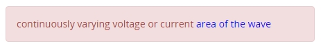

Dear participant , please read the instructions before the experiment.
Participants will be presented with several trials of copy and pasting using different techniques (AutoComPaste or Traditional)
Traditional refers to using Ctrl-C and Ctrl-V to copy and paste text
AutoComPaste will be demonstrated in the video below
Participants are required to copy the text shown in the Red Box on the left using the technique stipulated at the top
For Traditional, participants are to find the text from the Articles on the right and copy and paste it into the Text Editor
For AutoComPaste, participants are required to type in the Text Editor and select from a list of matched sentences to add into the Text Editor
Once that is done, press the Next Task button to continue to the next trial or finish the experiment
**Important notes**
A break will be provided in Trial 36
If Blue Text is shown within the Red Box (see example below) from which you are suppose to copy text from, it means that the Blue Text is from another article compared to the rest of the text
Please view the video for a demonstration about AutoComPaste and press the Begin Experiment button to start